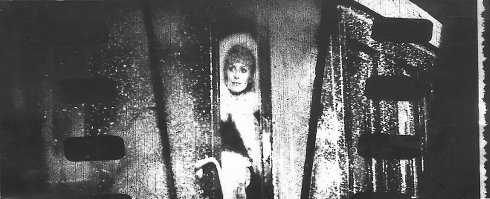
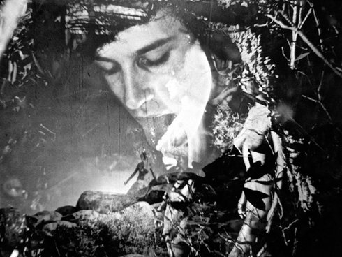

Artist in focus
L'arrivéeAT 1997/1998 3 min | ohne Dialog | 35mm CinemaScope ”L’Arrivée” recognizes the power of cinema, utilizing its control over space, and in this film especially, time, in order to uncover the energies of motion and story, of the violence inherent in both revolt and containment. (Tom Gunning) |
 |
Dream Work AT 2001 11 min | ohne Dialog | 35mm CinemaScope Just like in a real dream, ”Dream Work” does not contain individual and unconnected images; although each image is radically arbitrary, the context is so compelling that an alternative is inconceivable. (Bert Rebhandl) |
Instructions for a Light and Sound Machine AT 2005 17 min | ohne Dialog | 35mm CinemaScope Tscherkassky concentrates on central motifs from Sergio Leone’s classic “The Good, the Bad and the Ugly”, zeroing in on Eli Wallach stumbling across a vast cemetery and the anti-hero’s head as he dangles from the gallows. Tscherkassky intercuts the latter image with countdown leader, ironically delaying the saving bullet shot by Clint Eastwood. Hereby the very film tears and suddenly descends into pure, soundless whiteness. Only by way of its defects is the medium of film made tangible. (Stefan Grissemann) |
|